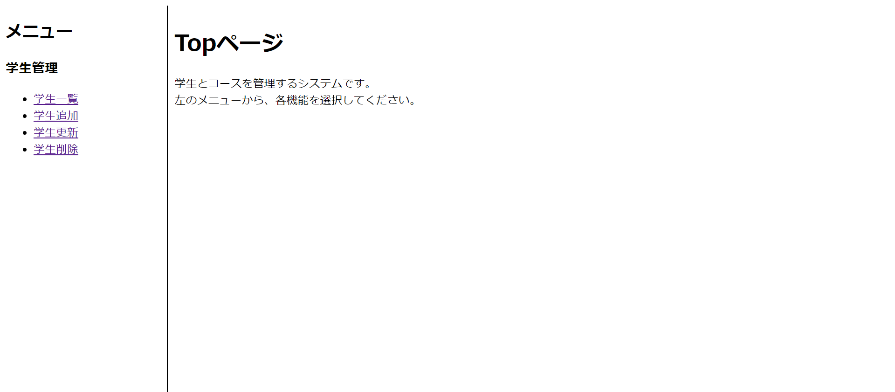

※画像です
生徒管理アプリケーション
私の学校ではサーブレットJSPとH2データベースを使った授業をしており、
単位認定試験で学生管理のシステムを作るお題が出たときの作品です。
サーバーはTomcat8.0を使っていて、データベースとフレームワークは先にも書いた通り
h2-1.4.195のバージョンのH2データベースとサーブレットJSPを使っています。バックエンドはJava言語だけ使っています。
製作期間は３日です。
使用ツールはeclipseです。